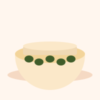
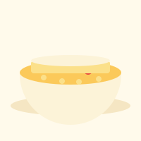
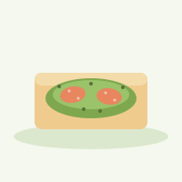
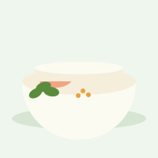
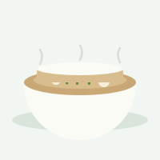
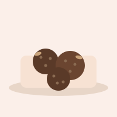
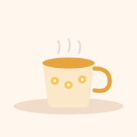
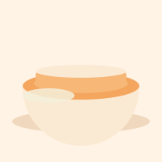

—
Belle écoute de ton corps aujourd'hui.
Les jours de douleur marquée, remplace toute séance par la posture de l'enfant et la respiration (onglet Respiration) : le repos est un choix valable, pas un renoncement.

Le curcuma est plus assimilable accompagné d'une pointe de poivre noir et d'un corps gras (présent dans le lait végétal).

Version fraîche et rapide pour les matins de phase folliculaire ou ovulatoire.

Bonne option salée riche en bons gras pour les jours où le sucré ne passe pas.


Idéale les jours d'endo-belly : chaude, peu de FODMAPs, et réconfortante.

Pratique à garder sous la main en phase lutéale pour les fringales sucrées.

À garder à portée de main pendant les règles, en complément de la bouillotte.

Plat doux pour les jours d'endo-belly : facile à digérer, chaud et réconfortant.
Léger le soir, riche en fibres pour un bon transit.
5 minutes (environ 30 cycles) suffisent pour ressentir un effet sur la tension et la perception de la douleur.
Sons générés directement par l'application (bruit filtré), sans téléchargement ni fichier audio externe.